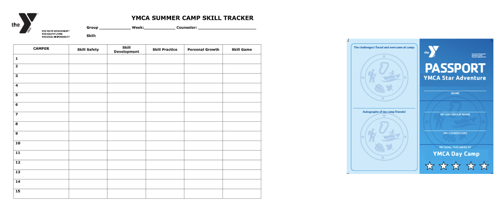
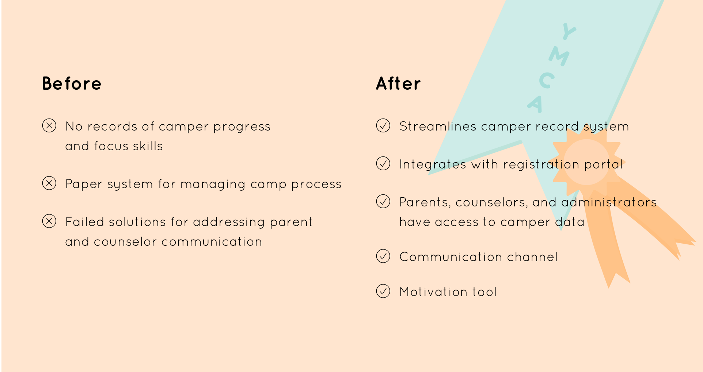
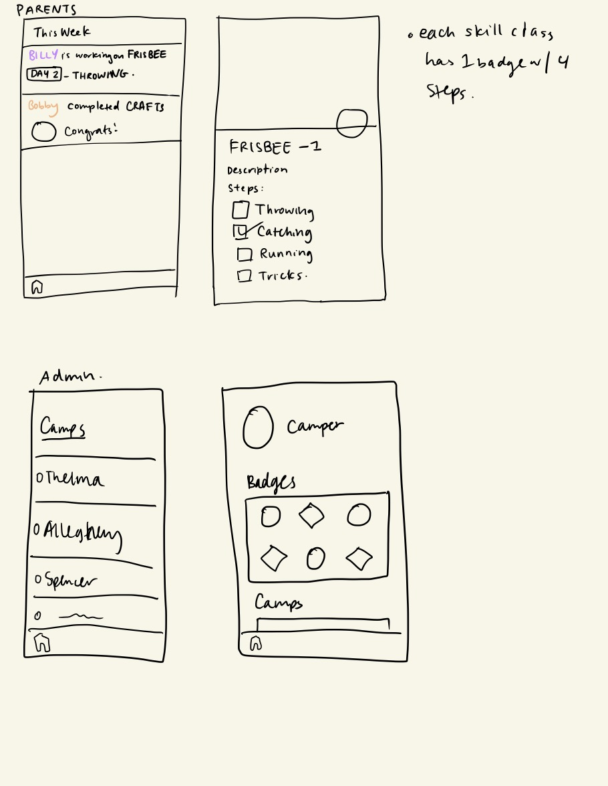
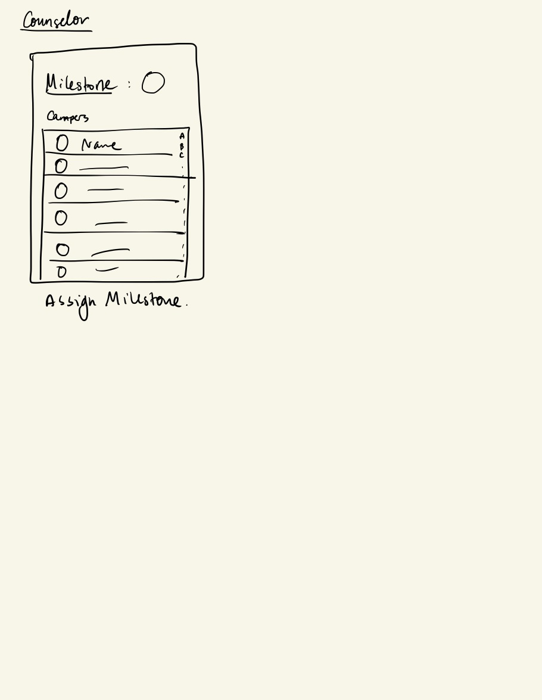
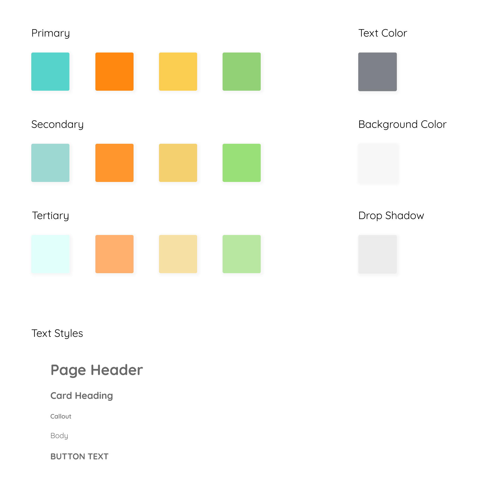
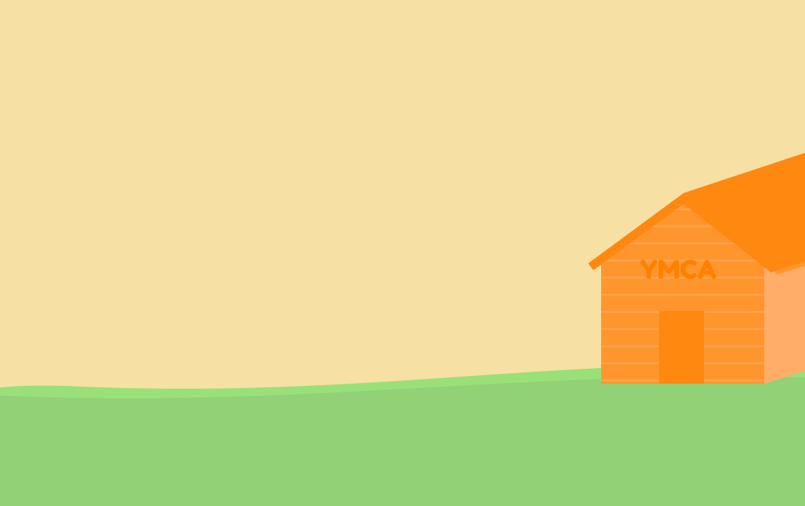

Project Manager
Product Design
Developer
role
team
Nawon Choi
Stephanie Ananth
Stephanie Ananth
timeframe
Jan – May 2019
client
Our client for this project was YMCA Pittsburgh's summer camps division. The summer camps division employees 300 people and manages about 1,500 kids over the course of the summer.
introduction
Over the course of five months, the team consulted for the summer camps division of YMCA Pittsburgh. We worked closely with Todd Brinkman, the vice president of youth development, and Kim Black, a full time manager of several camp branches. Our client’s goal through this engagement was to increase retention rates in YMCA camp programs and increase engagement of parents and campers in camps.
understanding needs of ycamps
While the client came into this engagement with a solution in mind, the team conducted research to understand the needs of ycamps before settling on a direction. In this process, we talked extensively with our clients on how different aspects of their camps worked. We also conducted a survey with parents who had previously enrolled their students in YCamps before.
findings
Technology Support
The YMCA has an IT team in charge of running the website and payments as
well as keeping servers up and running. The IT team focuses on keeping systems afloat, not on adding features or updating website content and code. None of them have experience coding. The solution would have to take into account that there would be no one to support it.
Camp Communications
Communication with parents during camps is relatively limited. Outside of mass communications via text, there was no good system for communicating camper progress.
Limited Budget
There was no allocated budget for the project. YMCA Pittsburgh filed for Chapter 11 bankruptcy in 2018. Hence, moving forward, we worked to keep costs down as much as possible.
Data Management
The organization primarily uses spreadsheets and paperwork to track information for their day camps. An exported spreadsheet is emailed around or used on Google Docs to manage camp paperwork.
previous attempts at addressing parent engagement
The client has previously tried to manage camper information and communicate with parents about their child’s progress using passport-sized books to indicate which activities the child has completed and display any badges they have earned. These books allowed the parents to see exactly what their child was learning and allowed the camper to see their own progress; however, these small books were easy to lose or misplace, so the initiative was not successful. The client has also tried posting progress sheets onto a blackboard for parents to pick up. Often at child pickup and dropoff for these camps, it is hectic and busy, so parents never get a chance to see the progress sheets.
design opportunity
Before beginning this consultancy, there was a very apparent problem between thecommunication of camp staff and parents. The client had mentioned that parents often do notk now what goes on in camps. To verify this, our team conducted surveys and interviewed parentsof campers to see how they felt about YCamps. From our gatherings, we discovered that parents do not feel like they know what their children are learning at camp. On average, parents rated the question, “Do you feel informed about camper progress and activities?” a 3 out of 5. Furthermore, they mentioned that they did not interact with counselors much outside of signingtheir children in and out of camps. With this data that we collected, we were able to discover that communication, which affects how parents perceive the value of YCamps, needs improvement.
The client proposed a solution of a mobile application or a mobile friendly website for parents to check in on their child’s progress within camps. Currently, the retention rates of YCamps is at 42%, but the organization is targeting a 56% retention rate. From the information that YMCA has collected, they notice that students that tend to return to camp each week and year when their parents are more involved in the student’s learning. The goal is to have parents understand the value of YCamps, which will increase the likelihood of parents to enroll their kids in YCamps the following week of the summer and hopefully even the next year. By focusing on increased communication between camp staff and parents about student progress, we can help convey the value of YCamps. As parents and children find the YMCA’s programs to be valuable and important to their child’s growth, they will continue to sign up for more camps or enroll in other programs. This in turn, will increase retention rates and hopefully generate more profit.
solution
Our solution was to build a gamified mobile-responsive web application called YCHAT, or YMCA Home to Camper Adventure Tracker. This mobile-first web application is designed to bridges communications between camp counselors and parents. This would be beneficial to the counselors, campers, and parents, as it would allow for student progress to be recorded electronically, easing the burden on the counselors. They would also be able to provide personalized feedback through the app rather than having to talk to each parent individually about each child.
focus skills
Students select a focus skill for the week and work on completing it during the course of the camp. With the application, parents would be able to keep track of their child’s progress on the skill throughout the week and understand the value that YCamps provides. This would be a better alternative to the previous attempts because a mobile web app would be a quicker and direct form of communication between parents and counselors that cannot be lost, misplaced, and is easily accessible by all parties. Parents would also be able to check the application throughout the day and stay updated on the latest activities. Students also gain a sense of accomplishment as they work to complete and collect badges. This would not only keep students motivated, but also encourage them to come back for future camps.
counselor view
Camp counselors manage groups of 12 students over the course of the camp. With the application, counselors can quickly assign focus skills to campers. As campers complete segments of their focus skills, counselors can mark camper completion.
parent view
Parents can log in and check their child's progress throughout the day. If they want further detail on a skill, parents can click into it. Parents can also share progress with their kids.
adminstrator view
Camp administrators can oversee multiple camps, update content, and see student data.
working demo
process
low fidelity wireframes
To begin the wireframing process, the team collaborated and sketched out screens of how the app might flow. After, we did validation with the client on its intended funcionality.


mid-fidelity wireframes + user testing
Taking feedback and changes on some of the assumptions we made, we iterated with mid-fidelity wireframes. Following the wireframes, we conducted Think Aloud user tests with potential users such as staff and parents. We generally received positive feedback and users noted a few areas that were not clear. Staff, in particular, mentioned that the concept of managing changes to data could be more clear.

visual system
For the high fidelity wireframes, we worked on the visual system. Because the app was designed to be a gamified, summer camp app, we tried to bring that feel through with the branding. The color palette was modified on the YMCA's colors.
illustrations
To bring the app to life, we worked on illustrations to evoke themes of summer camps.




high fidelity wireframes
For the final wireframes, we made changes based on feedback and technical constraints.
handoff
As the project came to a close, we prepared to hand off our work to YMCA. To ensure for a smooth transition, we presented our clients with all necessary documentation and gave them a debrief of all of its contents. It included:
- Project proposal, sprint reports, final report
- User guides
- Technical documentation
- Assets, design files, design system
- Account credentials
- Heroku, Github repository
- Recommendations for future improvements
reflection
Consulting for the YMCA has been a incredible experience. Rather just throwing a solution at client, it ultimately was about working with them to produce a sustainable result. Over the course of this project, I've had to wear many hats: from managing sprint cycles, designing the application, and doing full stack development. I've been able to learn so much along the way.